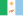
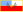

List of Argentine provinces by gross regional product
This article needs to be updated. (April 2022) |
This article includes a list of Argentine provinces by gross regional product, the value of all final goods and services produced within a nation in a given year, and other main indicators. The rows in this table can be sorted by clicking on the arrows at the top of any column.
Provinces
[edit]| District | Population[1] | GDP (bil. US$) 2023[1] a |
GDP per capita (US$) 2023[1] a |
Agri culture b |
Mining b |
! Manufac turing b |
Services & cons truction b |
Exports (mil. US$) 2011[2] |
Mean mo. salary 2017 (Pesos)[3]ae |
Vehicles (per 1000)[4]d |
Income poverty[5]f |
|---|---|---|---|---|---|---|---|---|---|---|---|
| Buenos Aires Province | 17,620,000 | 243.5 | 13,800 | 4.5 | 0.1 | 21.3 | 74.1 | 28134 | 25,575 ($US1,544) | 266 | 21.8 |
| Córdoba | 3,800,000 | 47.5 | 12,500 | 10.6 | 0.2 | 14.0 | 75.2 | 10635 | 23,162 ($US1,398) | 328 | 25.7 |
| Santa Fe | 3,560,000 | 44.7 | 12,600 | 10.1 | 0.0 | 17.4 | 72.5 | 17804 | 24,289 ($US1,466) | 299 | 25.5 |
| City of Buenos Aires | 3,080,000 | 35.0 | 11,400 | 0.3 | 1.0 | 12.9 | 85.8 | 426 | 30,623 ($US1,849) | 528 | 12.2 |
| Mendoza | 2,010,000 | 27.2 | 13,500 | 5.4 | 6.1 | 17.5 | 71.0 | 1862 | 20,951 ($US1,265) | 313 | 21.7 |
| Tucumán | 1,730,000 | 19.6 | 11,300 | 6.0 | 0.1 | 12.6 | 81.3 | 1031 | 18,829 ($US1,137) | 146 | 32.6 |
|  Chaco | 1,220,000 | 16.5 | 13,500 | 12.6 | 0.0 | 7.5 | 79.9 | 602 | 19,702 ($US1,190) | 137 | 36.4 |
| Entre Ríos | 1,400,000 | 16.1 | 11,500 | 11.9 | 0.3 | 11.6 | 76.2 | 1908 | 20,585 ($US1,243) | 280 | 30.0 |
| Salta | 1,450,000 | 14.8 | 10,200 | 8.1 | 7.6 | 10.4 | 73.9 | 1332 | 19,863 ($US1,199) | 139 | 30.7 |
| Misiones | 1,270,000 | 14.6 | 11,500 | 6.7 | 0.0 | 13.0 | 80.3 | 536 | 18,127 ($US1,094) | 153 | 37.7 |
| Corrientes | 1,140,000 | 13.0 | 11,500 | 12.6 | 0.0 | 8.2 | 79.2 | 230 | 19,158 ($US1,157) | 168 | N/A |
| Santiago del Estero | 990,000 | 11.2 | 11,300 | 11.5 | 0.1 | 6.2 | 82.2 | 1082 | 17,648 ($US1,066) | 103 | 32.8 |
| Río Negro | 760,000 | 10.4 | 13,800 | 4.9 | 8.4 | 7.3 | 79.4 | 670 | 24,896 ($US1,503) | 285 | 21.2 |
| San Juan | 790,000 | 9.5 | 12,000 | 8.1 | 0.3 | 15.9 | 75.7 | 2470 | 21,438 ($US1,294) | 216 | 25.0 |
| Neuquén | 680,000 | 9.4 | 13,800 | 0.7 | 42.8 | 2.9 | 53.6 | 353 | 39,475 ($US2,383) | 339 | 23.4 |
| Jujuy | 780,000 | 8.0 | 10,200 | 5.5 | 0.7 | 14.6 | 79.2 | 456 | 20,702 ($US1,250) | 153 | 33.2 |
| Chubut | 630,000 | 7.2 | 11,500 | 6.9 | 21.3 | 10.0 | 61.8 | 3148 | 40,417 ($US2,440) | 400 | 21.4 |
| San Luis | 520,000 | 7.0 | 13,500 | 4.9 | 0.5 | 42.4 | 52.2 | 735 | 24,170 ($US1,459) | 245 | 19.0 |
| Formosa | 610,000 | 5.7 | 9,300 | 7.6 | 1.5 | 6.4 | 84.5 | 40 | 20,590 ($US1,243) | 107 | 35.1 |
| Santa Cruz | 380,000 | 5.2 | 13,800 | 4.4 | 47.1 | 2.3 | 46.2 | 1857 | 47,480 ($US2,867) | 432 | 11.6 |
|  Catamarca | 420,000 | 5.0 | 12,000 | 3.6 | 20.8 | 12.1 | 63.5 | 1596 | 21,412 ($US1,293) | 162 | 34.6 |
| La Pampa | 360,000 | 4.9 | 13,500 | 19.0 | 3.7 | 5.3 | 72.0 | 378 | 22,834 ($US1,379) | 364 | 21.1 |
| La Rioja | 400,000 | 4.8 | 12,000 | 3.9 | 0.1 | 16.8 | 79.2 | 281 | 19,035 ($US1,149) | 172 | 30.2 |
| Tierra del Fuego | 180,000 | 2.5 | 13,800 | 4.7 | 18.5 | 18.6 | 58.2 | 443 | 42,384 ($US2,559) | 478 | 12.7 |
| 45,780,000 | 583.3 | 12,700 | 5.0 | 2.7 | 16.3 | 76.0 | 83950c | 26,233 ($US1,584) | 284 | 25.5 |
{kind=link}
Notes
[edit]- a) GDP in constant (2015) market exchange rate dollar
- b) Sectorial data from CEPAL (2000).
- c) Includes USD5.9 billion not specified by province.
- d) Excludes 427,000 motor vehicles (3.9%) not specified by province. Included in national total.
- e) 2017 data; includes employees registered with Social Security Administration only.
- f) 2014 data; official figures lower due to understated CPI index.[6]
- g) 2001 Census.
See also
[edit]References
[edit]- ^ a b c "TelluBase—Argentina Fact Sheet (Tellusant Public Service Series)" (PDF). Tellusant. Retrieved 2024-01-11.
- ^ INDEC: Comercio Exterior Argentino, 2011 Archived 2015-09-24 at the Wayback Machine (in Spanish)
- ^ "Boletín de renmuneraciones de los trabajadores registrados por provincial Serie annual-2017" (in Spanish). Ministerio de Trabajo, Empleo y Seguridad Social. Archived from the original on 24 December 2019. Retrieved 24 December 2019.
- ^ ADEFA: Argentine vehicle fleet Archived 2014-05-08 at the Wayback Machine
- ^ "Vuelve a alarmar la pobreza: en Misiones, Chaco y Formosa alcanza casi el 40%" (in Spanish). Instituto Argentino para el Desarrollo de las Economias Regionales. Retrieved 28 January 2016.
- ^ "Para el INDEC, solamente hay un 6,5% de pobreza". Clarín.
Lists of Argentine provinces | |
|---|---|
| Ranked | |
| Politics | |
| Miscellaneous | |